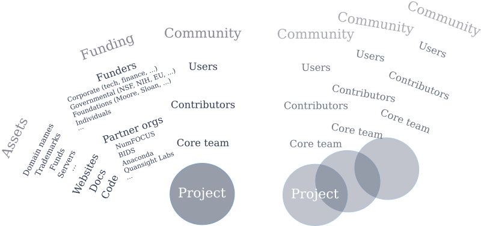

Thoughts on joining Quansight Labs
written by Ralf Gommers on 2019-04-08
I have now been at Quansight Labs for exactly one week. We have a very talented, motivated and friendly team, which I'm really excited to be working with. There is still much to learn and discover. I have been thinking about and putting energy into the evolution of the SciPy and PyData ecosystems for a decade, and leading Quansight Labs is an opportunity to continue and expand that.
In his blog post welcoming me, Travis set out his vision for pushing forward the Python ecosystem for scientific computing and data science, and how to fund it. In this post I'll add my own perspectives to that. Given that Quansight Labs' purpose, it seems fitting to start with how I see things as a community member and organizer.
A community perspective
The SciPy and PyData ecosystems have experienced massive growth over the past years, and this is likely to continue in the near future. As a maintainer, that feels very gratifying. At the same time it brings up worries. Core projects struggle to keep up with the growth in number of users. Funded development can help with this, if done right. Some of the things I would like to see from companies that participate in the ecosystem:
- Explain innovations they're working on to the community and solicit input, at an early stage. Developing something away from the spotlight and then unveiling it as the "next big thing" once it's done usually leads to either corporate-driven projects (if users adopt it) or a short life span.
- Participate in a sustainable way. This means for example to contribute in a way that lowers, or at least doesn't increase, the overall effort required for maintenance. Only sending pull requests with new features doesn't achieve that. Solving maintenance pain points or helping with code review does.
- Operate transparently. Develop in the open, plan in the open, be clear about directions and motivations.
When I started working on NumPy and SciPy the world was simple: projects with Subversion repositories, mailing lists, and volunteers, and a couple of yearly conferences. Today the landscape looks a lot more complex. This rough sketch attempts to capture a part (all doesn't fit on a 2-D canvas) of how I think it looks from a community or project perspective:

Acting effectively within that landscape as a project has become important maintenance work in itself, and working on governance structures or legal agreements is less fun (and thus harder to find volunteers for) than writing code. Quansight Labs will add to this complexity. It also provides an opportunity to help manage that same complexity though, as a home for core developers of many of the projects in the ecosystem.
A Quansight Labs perspective
To date, the work at Quansight Labs has mainly focused on innovation and highly experimental prototypes. Travis already provided some context on XND (a clean, modular implementation of generalized NumPy concepts) and uarray (a Python array interface). XND is already fairly mature while uarray is still very young; however both are at the stage where we can think about adoption pathways. Experimental prototypes with a lot of potential include python-moa (a Python implementation of Mathematics of Arrays), metadsl (a framework for creating domain specific language libraries in Python), and mtypes ("memory types for Python", bridging the Python type system to and from C).
The balance of work at Quansight Labs will gradually shift towards sustaining core projects in the PyData ecosystem. Which projects we work on will be driven by both availability of funding and personal interests of people. As well as by input from the community - we want to push forward core projects, so we need to act on priorities that core development teams have. Clearly articulating those priorities isn't always simple. Half a year ago at the NumFOCUS Summit I took stock of the roadmaps for all NumFOCUS projects: 50% of the projects didn't have a roadmap, and of the 50% that did again half said that their roadmaps were not up to date. This is also the kind of thing Quansight Labs can help with. For example, Anthony copatz has done a great job in producing roadmap brochures for each of the projects that have been covered in the Open Source Directions webinars: https://www.quansight.com/projects. In that process he helped improve those project roadmaps tremendously.
Quansight itself is only a year and a bit old; Quansight Labs is still being shaped as a separate entity. We do know though that our landscape picture will look complex as well. We have and will build out close relationships with many projects and ecosystems (PyData, Jupyter, SciPy), with like-minded organizations (NumFOCUS, Ursa Labs, BIDS), with companies interested in open source, and with funders.
A personal perspective
Why did I start my journey in open source scientific Python in the first place? I was a happy user for a couple of years, and answered a request to the community to help out with documenting NumPy. Then I stayed because I could see that those first contributions had impact. Also because I was learning things and because of the friendly community, but impact was and still is an important driver. I see the potential that Quansight Labs has, and the need for it (and other organizations like it) to be successful.
Besides working with talented, humble people and being able to spend more time on the projects I care about, what particularly interests me is how to bridge the gap between innovation and maintenance. In just one week I've seen an impressive amount of innovation - now how do we go about making that benefit the whole user community?
This was the view from my window on my first day: a ship with the letters "APL" on it:

Given NumPy's heritage and the work on Mathematics of Arrays at Quansight Labs (both connected to APL), it felt symbolic.
Next steps
It's early days, however I do have two things in mind that will be priorities over the next period:
- Together with the people working on XND and uarray, figure out how to engage the community in a constructive way and get a clear user adoption story in place (where the users may well include projects like NumPy and Pandas).
- Initiate more contributions from Quansight Labs to core projects. Here are some initial ideas I'm thinking about:
- In NumPy, help with finalizing and road testing NEP 18 (
__array_function__) - In SciPy, fix the use of deprecated NumPy APIs
- Finish the backwards compatibility NumPy Enhancement Proposal
- In SciPy, complete one of the
spatial.distancereimplementations.
They are focused on NumPy and SciPy for a number of reasons: I understand the needs of those projects well; improvements in those projects benefit the whole stack; they need more maintenance; and a lot of the people at Quansight work on things that require in-depth knowledge of the NumPy and Python C APIs. We will quickly branch out though. Last week I have already talked to core developers of Dask, JupyterLab and Spyder. I have also recently co-written a proposal that included significant work on Matplotlib, Pandas and scikit-learn. And I plan, together with others at Quansight, to actively engage with the wider community.
I strongly believe in a community-governed open source ecosystem, so am very interested in open conversations about project and ecosystem priorities. Feedback and ideas for what we should (or should not) be focusing on at Quansight Labs are very much welcome!